7 Molécules et liaisons chimiques
- Expliquer le concept de liaison chimique.
- Identifier les différents types de liaisons chimiques.
- Expliquer le concept d’électronégativité.
- Reconnaître les ions que contient une molécule dans sa formule brute.
- Dessiner la formule développée d’une molécule avec ses covalences et électrovalences.
- Calculer la masse molaire d’une molécule à partir des masses atomiques des atomes qui la composent.
- Calculer le nombre de moles/molécules que contient une masse donnée d’un composé.
En observant le monde autour de nous, on découvre qu’il est composé principalement de corps purs composés et de mélanges de corps purs composés: la roche, les sols, le pétrole, les arbres et le corps humain sont tous des mélanges complexes de composés chimiques liant différents types d’atomes ensemble. Seuls les gaz rares se trouvent dans la nature sous forme d’atomes isolés.
7.1 Les molécules
De nombreuses substances existent sous la forme de deux ou plusieurs atomes reliés entre eux de manière si forte qu’ils se comportent comme une seule particule. Ces combinaisons de plusieurs atomes sont appelées molécules. De manière similaire à un atome, une molécule est la plus petite partie d’une substance qui possède les propriétés physiques et chimiques de cette substance. Cependant, une molécule est composée de plus d’un atome.
Molécule
Une molécule est un groupe d’au moins deux atomes liés par une/des liaison(s) chimique(s).
Les chimistes utilisent des formules chimiques pour exprimer la composition des espèces chimiques à l’aide de symboles.
7.1.1 La formule brute
Les molécules sont composées d’atomes. On les représente par une formule, en indiquant les symboles des atomes qui les composent et leur nombre. Cette formule est appelée formule brute. La formule brute donne le nombre d’atomes des différents éléments qui forment un composé, exprimés avec les plus petits nombres entiers possibles.
- \(NaCl\) : 1 atome de sodium et 1 atome de chlore
- \(O_2\) : 2 atomes d’oxygène
- \(H_2O\) : 2 atomes d’hydrogène et 1 atome d’oxygène
Lorsqu’un atome n’est présent qu’une seule fois dans la molécule, on n’indique pas l’indice 1. La formule brute de l’eau s’écrira donc H2O et non H2O1, et on écrira CO2 et non C1O2.
7.2 La masse molaire moléculaire
Masse molaire moléculaire
La masse molaire d’un composé est la masse en grammes d’une mole de molécules de ce composé.
Une molécule de \(CH_4\) contient 1 atome de carbone et 4 atomes d’hydrogène.
Donc, une mole de molécules de \(CH_4\) contient 1 mole d’atomes de carbone et 4 moles d’atomes d’hydrogène.
La masse d’une mole de méthane peut être trouvée en additionnant les masses molaires atomiques du carbone et de l’hydrogène présents dans la molécule:
\[ \begin{split} \text{Masse de 1 mol de carbone} &= 12.01 \text{ g} \\ \text{Masse de 4 mol d'hydrogène} &= 4.032 \text{ g} \quad (4 \cdot 1.008 \text{ g}) \\ \hline \text{Masse de 1 mol de $CH_4$} &= 16.04 \text{ g} \end{split} \]
On donne les masses molaires atomiques : H = 1.008, C = 12.011, O = 15.999 g/mol.
- Calculez la masse molaire du dioxyde de carbone \(CO_2\).
- Calculez la masse molaire de l’eau \(H_2O\).
- Combien de moles de \(CO_2\) y a-t-il dans 22.0 g de dioxyde de carbone ?
- \[ M(CO_2) = 12.011 + 2 \cdot 15.999 = 44.01 \text{ g/mol} \]
- \[ M(H_2O) = 2 \cdot 1.008 + 15.999 = 18.02 \text{ g/mol} \]
- \[ n = \frac{m}{M} = \frac{22.0}{44.01} = 0.500 \text{ mol} \]
7.2.1 La formule développée
La formule brute ne permet pas d’indiquer comment les atomes sont reliés entre eux par des liaisons chimiques ou comment ils sont disposés dans l’espace. Comprendre comment les atomes d’une molécule sont disposés et comment ils sont liés entre eux permet d’expliquer les caractéristiques physiques et chimique d’un composé.
La formule développée identifie l’emplacement des atomes ainsi que leurs liaisons au sein d’une molécule. On utilise la représentation de Lewis pour dessiner les atomes des différents éléments qui sont reliés par des lignes qui représentent les liaisons chimiques.
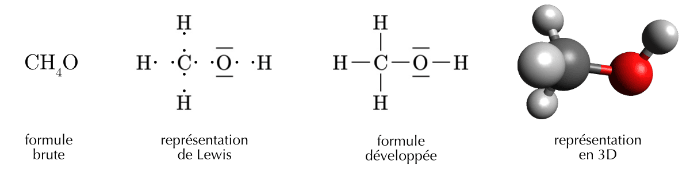
7.3 Les liaisons chimiques
Pourquoi les atomes se lient entre eux ? Deux atomes liés ensemble forment un système physique dont l’énergie potentielle est plus basse que celle de deux atomes non liés. La nature cherche à minimiser l’énergie d’un système, les atomes ont donc tendance à former des liaisons. Les atomes se trouvent dans un état plus stables quand ils participent à une liaison que quand ils sont isolés.
Les forces qui maintiennent les atomes ensemble dans une molécule sont appelées liaisons chimiques (ou liaisons intramoléculaires).
On divise les liaisons chimiques en trois familles différentes:
- la liaison ionique
- la liaison covalente
- la liaison métallique
Répondez aux questions suivantes sur les liaisons chimiques.
- Pourquoi les atomes ont-ils tendance à former des liaisons ? Que devient l’énergie du système ?
- Comment appelle-t-on les forces qui maintiennent les atomes ensemble dans une molécule ?
- Citez les trois grandes familles de liaisons chimiques.
- Quels sont les seuls éléments que l’on trouve dans la nature sous forme d’atomes isolés ? Pourquoi ?
- Deux atomes liés ont une énergie potentielle plus basse que deux atomes isolés. La nature tend à minimiser l’énergie : les atomes forment donc des liaisons pour être plus stables. L’énergie du système diminue.
- Les liaisons chimiques (ou liaisons intramoléculaires).
- La liaison ionique, la liaison covalente et la liaison métallique.
- Les gaz rares (groupe VIII) : leur couche de valence est déjà complète (octet), ils sont donc stables et n’ont pas besoin de former de liaisons.
7.3.1 L’électronégativité
Électronégativité
L’électronégativité est la capacité d’un atome à attirer les électrons de liaison.
Plus l’électronégativité d’un élément est élevée, plus il aura tendance à attirer à lui les électrons dans une liaison. L’électronégativité de chaque élément est indiquée dans votre tableau périodique des éléments.
Les liaisons sont rarement purement ioniques ou purement covalentes, dans la plupart des substances les liaisons formées se situent quelque part entre la liaison ionique et la liaison covalente.
En se basant sur la différence d’électronégativité (\(\Delta\)E) entre deux atomes on peut connaître le type de liaison que vont former ces deux atomes.
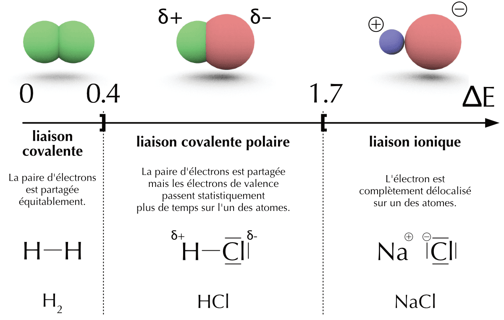
L’électronégativité de chaque élément est indiquée dans votre tableau périodique des éléments.
On donne les électronégativités (tableau périodique) : Na = 0.9, H = 2.2, Cl = 3.1, O = 3.4.
- Qu’est-ce que l’électronégativité d’un atome ?
- Pour la liaison O–H, calculez la différence d’électronégativité \(\Delta E\) et déduisez le type de liaison. Quel atome attire le plus les électrons ?
- Pour la liaison Na–Cl, calculez \(\Delta E\) et déduisez le type de liaison.
- Pour la liaison Cl–Cl, que vaut \(\Delta E\) ? Quel est le type de liaison ?
- L’électronégativité est la capacité d’un atome à attirer à lui les électrons d’une liaison.
- \(\Delta E = 3.4 - 2.2 = 1.2\) : covalence polaire. C’est l’oxygène (le plus électronégatif) qui attire le plus les électrons.
- \(\Delta E = 3.1 - 0.9 = 2.2\) : liaison ionique (électrovalence).
- \(\Delta E = 3.1 - 3.1 = 0\) : covalence pure (les deux atomes attirent les électrons de manière identique).
7.3.2 La liaison ionique | métal - non-métal
Liaison ionique
Une liaison ionique résulte du transfert d’un ou plusieurs électrons d’un atome à un autre.
La liaison ionique est le résultat du transfert d’un ou plusieurs électrons depuis un métal vers un non-métal afin de satisfaire la règle de l’octet. Essayons de former une molécule avec du sodium et du chlore.
- Le sodium a tendance à perdre un électron de valence pour former le cation \(Na^{+}\)
- Le chlore a tendance à gagner un électron de valence pour former l’anion \(Cl^{-}\)
Le sodium et le chlore ont tous les deux un intérêt à former une liaison. L’atome de sodium va perdre un électron qui sera récupéré par l’atome de chlore. Ils compléteront tous les deux leur couche de valence avec huit électrons.
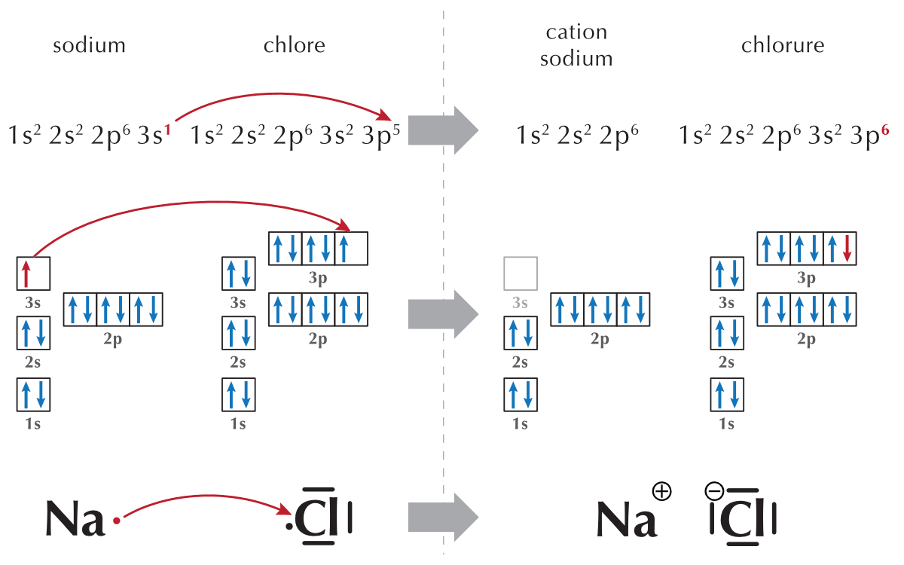
Deux atomes de sodium réagiront de la même manière avec deux atomes de chlore formant deux molécules de chlorure de sodium. Trois atomes de sodium réagiront avec trois atomes de chlore formant trois molécules de chlorure de sodium, et ainsi de suite… Si l’on fait réagir une mole d’atomes de sodium avec une mole d’atomes de chlore, nous obtiendront une mole de molécules de chlorure de sodium.
Un échantillon de chlorure de sodium (\(NaCl\)) est constitué d’un très grand nombre de cations \(Na^+\) et d’anions \(Cl^-\). Ces ions forment un réseau tridimensionnel, appelé réseau ionique. L’ensemble est électriquement neutre car le nombre de cations \(Na^+\) est égal au nombre d’anions \(Cl^-\). Pour un cation \(Na^+\), on aura un anion \(Cl^-\), on écrira donc la formule brute \(NaCl\).
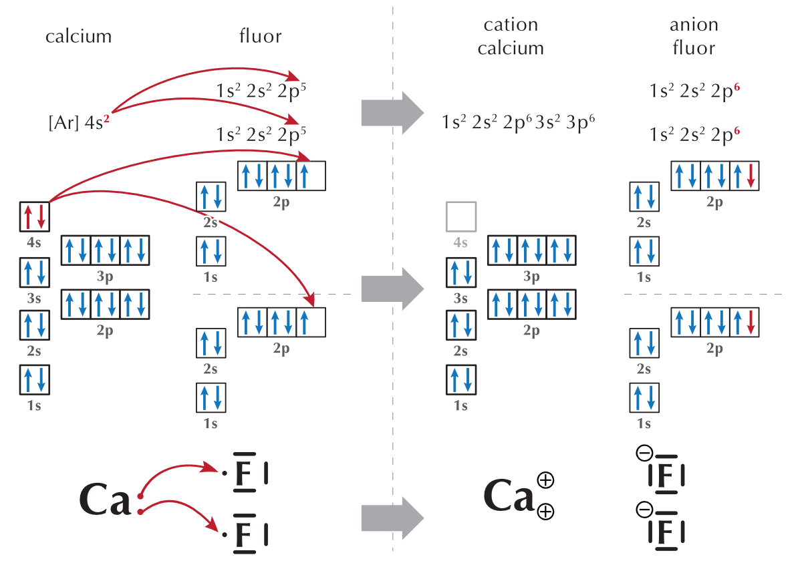
Le nombre relatif de cations et d’anions n’est pas toujours le même. Prenons par exemple le fluorure de calcium, \(CaF_2\). Il y a deux fois plus d’anions \(F^-\) que de cations \(Ca^{2+}\), on écrira donc la formule brute \(CaF_2\).
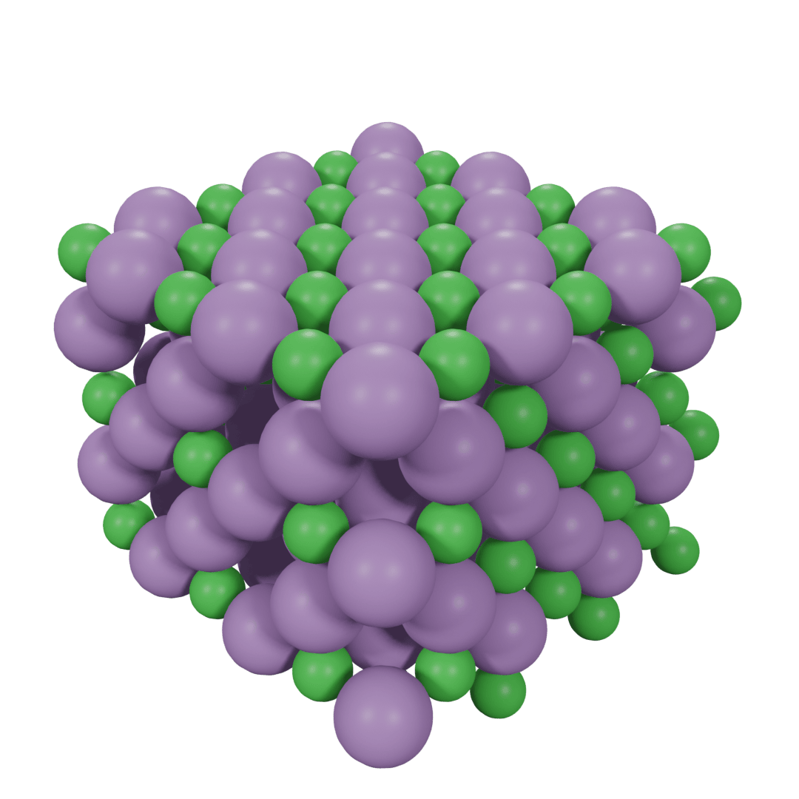
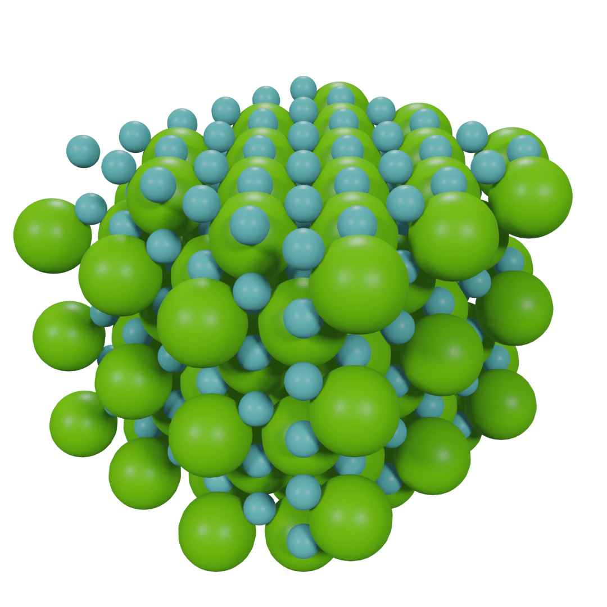
Pour chacun des couples suivants, indiquez le cation, l’anion et donnez la formule brute du composé formé.
| cation | anion | formule brute | |||
|---|---|---|---|---|---|
| a | Lithium | Fluor | |||
| b | Strontium | Iode | |||
| c | Bore | Fluor | |||
| d | Magnésium | Oxygène | |||
| e | Lithium | Azote | |||
| f | Aluminium | Oxygène |
\(Li^+\) / \(F^-\) / \(LiF\)
\(Sr^{2+}\) / \(I^{-}\) / \(SrI_2\)
\(B^{3+}\) / \(F^-\) / \(BF_3\)
\(Mg^{2+}\) / \(O^{2-}\) / \(MgO\)
\(Li^+\) / \(N^{3-}\) / \(Li_3N\)
\(Al^{3+}\) / \(O^{2-}\) / \(Al_2O_3\)
7.3.2.1 Dessiner les liaisons ioniques des composés binaires
- On dessine la structure de Lewis des atomes en plaçant l’élément le plus électronégatif à droite.
- On dessine autant de cations et d’anions nécessaires à apparier tous les électrons célibataires de chaque élément.
- On transfère les électrons des cations aux anions.
- On dessine les paires nouvellement créées et on ajoute les charges négatives ou positives.
| \(NaCl\) | \(MgBr_2\) | \(AlF_3\) |
|---|---|---|
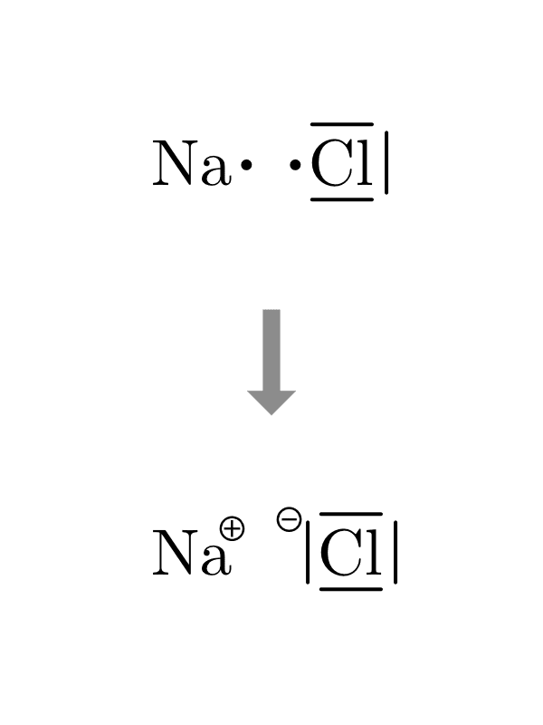 |
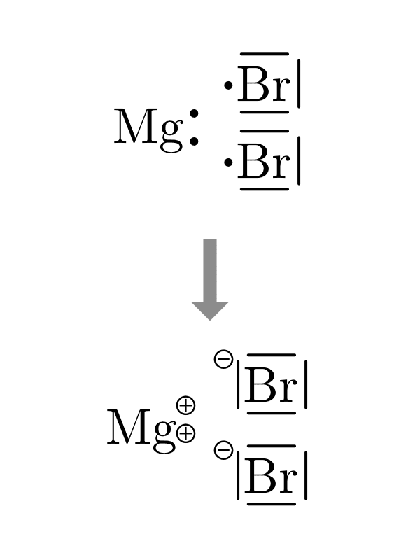 |
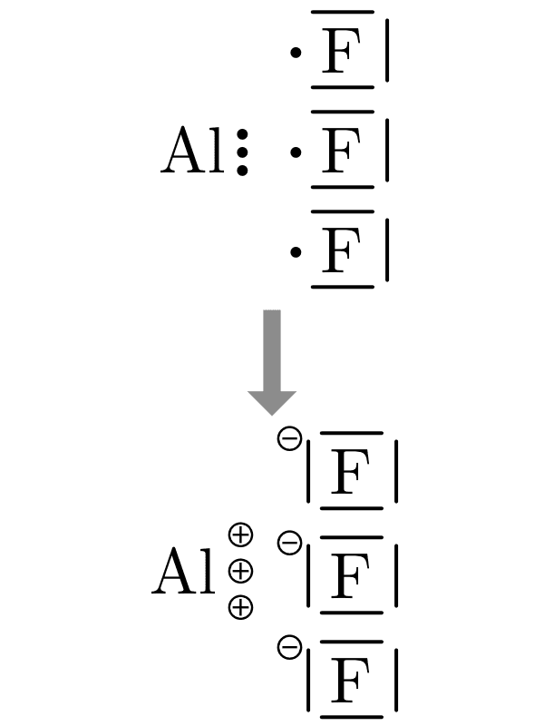 |
Remplissez le tableau suivant avec les molécules formées par les ions proposés.
| anion/cation | \(Na^+\) | \(Ca^{2+}\) | \(Al^{3+}\) |
|---|---|---|---|
| \(Cl^{-}\) | \(NaCl\) | ||
| \(O^{2-}\) | |||
| \(P^{3-}\) |
\(NaCl\) / \(CaCl_2\) / \(AlCl_3\)
\(Na_2O\) / \(CaO\) / \(Al_2O_3\)
\(Na_3P\) / \(Ca_3P_2\) / \(AlP\)
7.3.3 La liaison covalente | non-métal - non-métal
Liaison covalente
Une liaison covalente résulte du partage d’une ou plusieurs paires d’électrons entre deux atomes.
Considérons deux atomes d’hydrogène qui s’approchent l’un de l’autre. Tous les deux ont un seul électron, et chacun a besoin d’un électron supplémentaire pour avoir la même configuration électronique que l’hélium.
Dans cette situation, les électrons de liaison sont partagés. C’est une liaison covalente qui maintient les atomes ensemble.
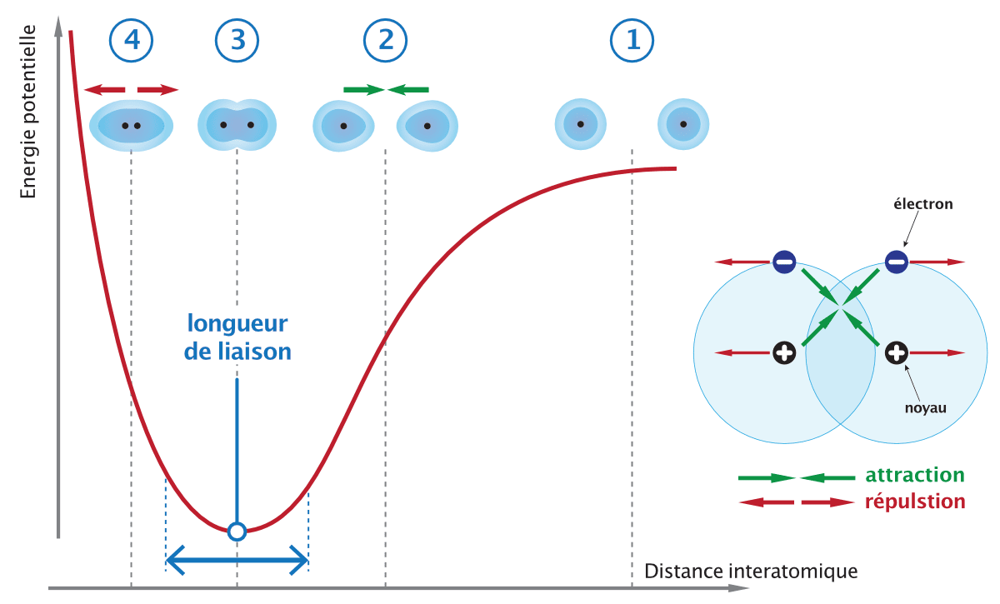
- Au point 1, les atomes sont éloignés. La distance est trop grande pour que les forces d’attraction et de répulsion puissent agir.
- Au point 2, la distance entre les atomes est suffisante pour que chaque noyau commence à attirer l’électron de l’autre atome. Ces attractions augmentent quand la distance diminue et abaissent l’énergie du système.
- Au point 3 (minimum d’énergie potentielle), l’attraction maximum est atteinte par rapport à la répulsion et le système atteint son minimum d’énergie.
- Au point 4, s’il était atteint, les atomes seraient trop proches et les répulsions pousseraient les noyaux vers le point 3.
Une liaison covalente résulte de l’équilibre entre l’attraction de particules de charges opposées et la répulsion de particules de même charge.
\[ H \cdot \quad + \quad \cdot H \quad \longrightarrow \quad H-H \]
La formation d’une liaison covalente se traduit par une plus grande densité électronique entre les deux noyaux. Les deux atomes d’hydrogène remplissent leur couche de valence avec les électrons qu’ils se prêtent mutuellement.
Dans de nombreuses molécules, pour atteindre un octet complet, les atomes vont partager plus d’une paire d’électrons célibataires. Une liaison covalente peut être simple, double ou triple, selon le nombre de paires d’électrons partagés.
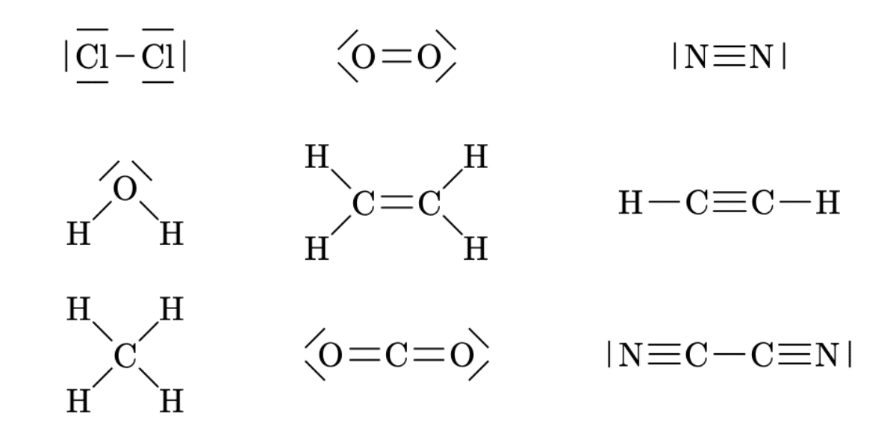
7.3.3.1 Dessiner les liaisons covalentes des composés binaires
- On dessine la structure de Lewis des atomes en plaçant l’élément le plus électronégatif à droite.
- On dessine autant d’atomes nécessaires à apparier tous les électrons célibataires de chaque élément.
- On dessine les liaisons nouvellement créées et on ajoute les charges partielles s’il y a lieu.
- Plusieurs liaisons covalentes doubles ou triples peuvent être nécessaires.
- On peut utiliser les paires libres pour former des liaisons par covalence de coordination.
- On dessine les liaisons nouvellement créées et on ajoute les charges partielles s’il y a lieu.
| \(H_2O\) | \(NH_3\) | \(CH_4\) |
|---|---|---|
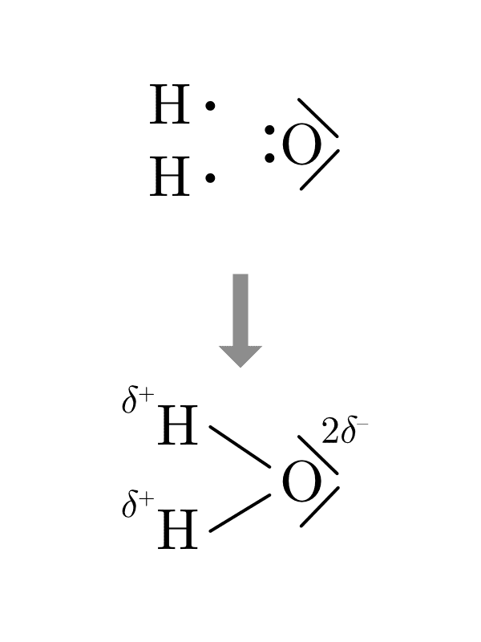 |
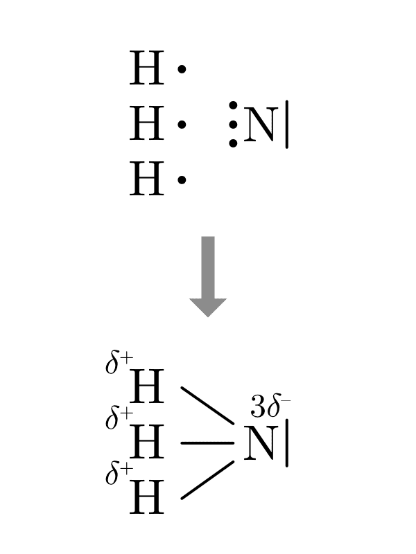 |
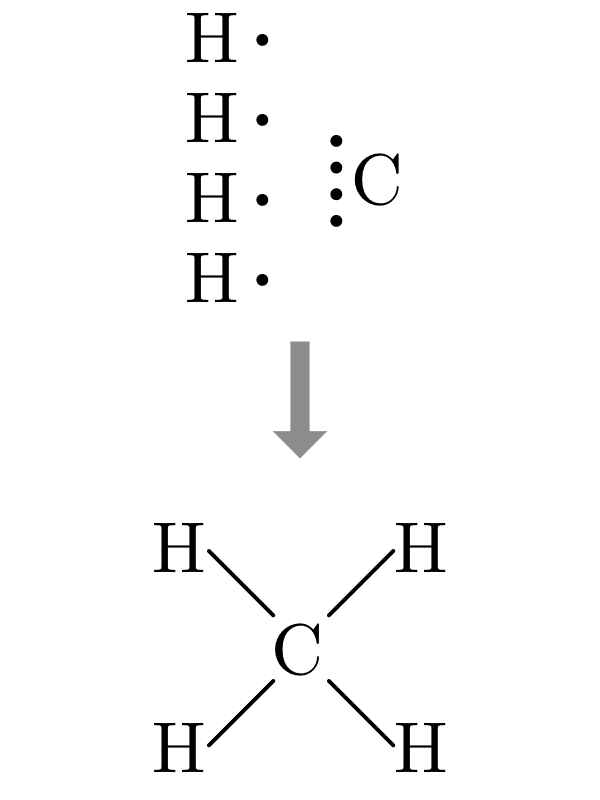 |
Pour chaque proposition ci-dessous :
- Complétez le schéma avec la structure de Lewis des atomes et les liaisons formées.
- Donnez la formule brute de chaque composé.
\(Br \quad Br\)
\(O \quad C \quad O\)
\(N \quad N\)
\(H \quad Cl\)
\(H \quad C \quad N\)
\(H \quad O \quad Cl\)
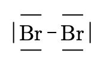
\(Br_2\)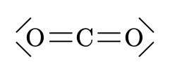
\(CO_2\)\(N_2\)
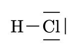
\(HCl\)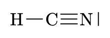
\(HCN\)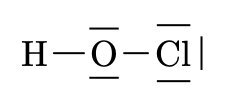
\(HClO\)7.3.4 La covalence de coordination
Covalence de coordination
Une covalence de coordination est une liaison covalente où deux électrons partagés proviennent du même atome.
La covalence de coordination est un cas particulier de la liaison covalente. Dans le cas de la liaison covalente simple, chaque atome fournit un électron. Dans le cas, de la covalence de coordination, un des deux atomes fournit les deux électrons.
\[ \underset{\text{covalence normale}}{A \cdot \quad + \quad \cdot B \quad \longrightarrow \quad A - B} \]
\[ \underset{\text{covalence de coordination}}{A | \quad + \quad B \quad \longrightarrow \quad A \rightarrow | B} \]
Par exemple, l’acide hypochloreux est constitué de liaisons covalentes normales. Les trois autres acides utilisent les doublets de l’atome de chlore pour former des covalences de coordinations.
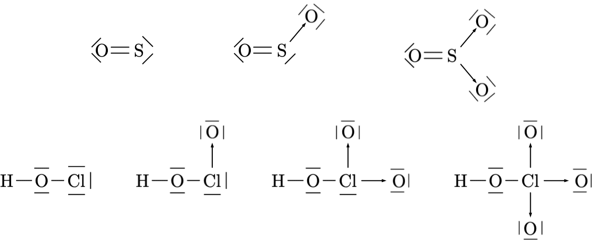
On dessinera les covalence de coordination en déplaçant le doublet sur l’atome qui le reçoit et en remplaçant le trait de liaison par une flèche.
7.3.5 Les ions polyatomiques
Les ions \(Na^+\), \(Mg^{2+}\) ou \(Cl^–\) sont monoatomique, ce qui signifie qu’ils sont constitué d’un seul atome ionisé. Il existe des ions polyatomiques, tels que \(NH_4^+\) ou \(SO_4^{2–}\). Ils se composent d’atomes liés par des covalences mais ils portent une charge positive ou négative.
| ion hydroxyle | ion nitrite | ion carbonate | ion ammonium |
|---|---|---|---|
| \(OH^–\) | \(NO_2^–\) | \(CO_3^{2–}\) | \(NH_4^+\) |
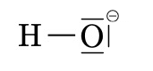 |
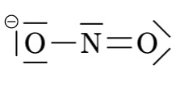 |
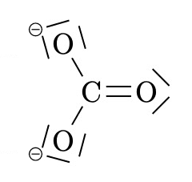 |
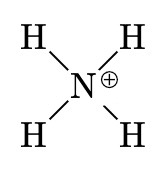 |
Quand un ion polyatomique est présent plusieurs fois dans une molécule, on l’indique dans la formule brute par des parenthèses et un indice comme dans les exemples : \(Ca(OH)_2\), \(Ba(NO_3)_2\), \(Ca(HCO_3)_2\).
Complétez le tableau en indiquant quel cation et quel anion forment les molécules ci-dessous ainsi que leur nombre:
| formule | cation | anion |
|---|---|---|
| \(NaNO_2\) | ||
| \(H_2SO_4\) | ||
| \(CaS_2O_3\) | ||
| \(Li_2CO_3\) | ||
| \(Mg_3(PO_4)_2\) |
\(NaNO_2\) / 1 \(Na^+\) / 1 \(NO_2^-\)
\(H_2SO_4\) / 2 \(H^+\) / \(SO_4^{2-}\)
\(CaS_2O_3\) / \(Ca^{2+}\) / \(S_2O_3^{2-}\)
\(Li_2CO_3\) / 2 \(Li^+\) / \(CO_3^{2-}\)
\(Mg_3(PO_4)_2\) / 3 \(Mg^{2+}\) & 2 \(PO_4^{3-}\)
Jeu en ligne — Entraînez-vous à trouver la charge des ions sur isotope.ch/charges.
7.3.6 Dessiner les composés ternaires
- De gauche à droite, dessiner le modèle de Lewis de chacun des éléments présents dans la molécule.
- Dessiner d’abord les éléments de la colonne I, II ou III.
- Dessiner ensuite autant d’oxygène qu’il y a d’électrons libres dans la première colonne.
- Dessiner ensuite les éléments autre que l’oxygène.
- Dessiner ensuite les oxygènes restants.
- Dessiner les covalences ou électrovalences selon les différences d’électronégativité.
Dessinez la formule développée à l’aide du schéma fourni pour les composés \(KNO_2\) et \(CaCO_3\)
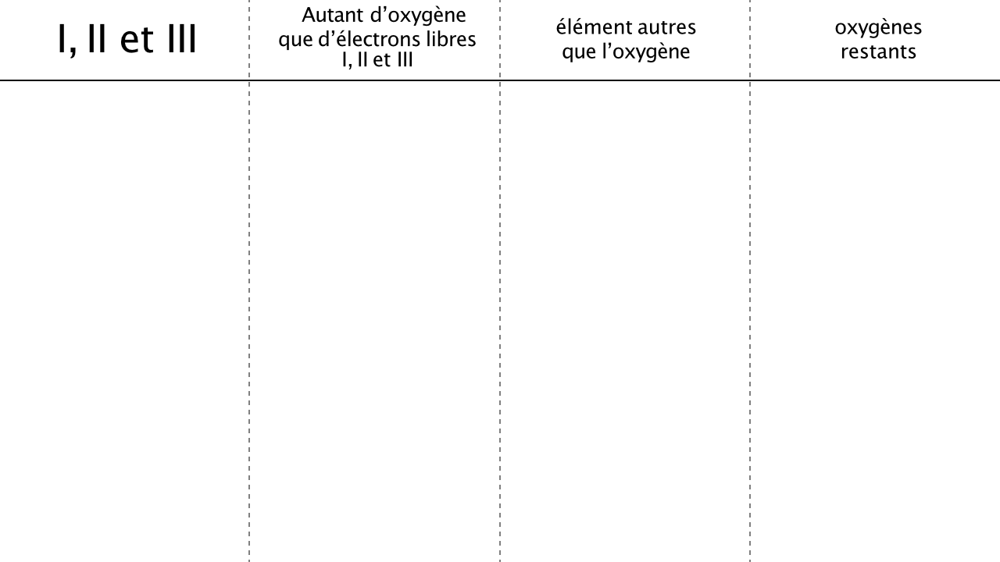
7.3.7 La liaison métallique | métal - métal
Liaison métallique
Liaison chimique dans laquelle les électrons mobiles sont partagés entre plusieurs noyaux.
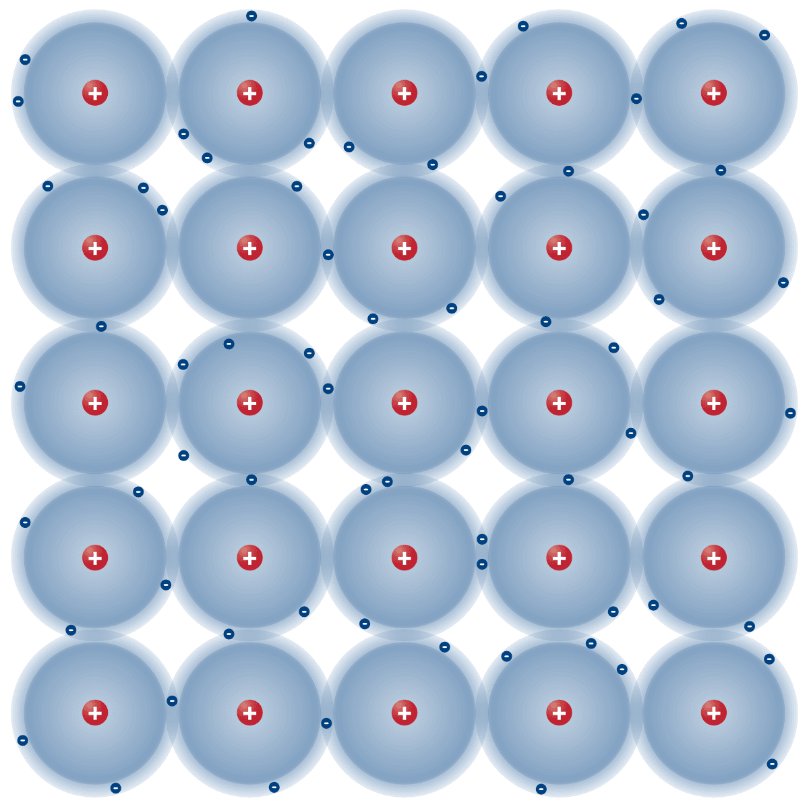
Les métaux ne réagissent pas vraiment avec d’autres métaux pour former des composés. Les métaux se combinent pour former des alliages, c’est-à-dire un mélange homogène d’un métal dans un autre.
Le modèle de la liaison métallique propose que tous les atomes du métal partagent leurs électrons de valence pour former un “océan” d’électrons. Les électrons externes sont libres de se déplacer dans tout l’échantillon. Les noyaux sont positionnés dans cet océan de manière ordonnée à des endroits précis. La forme de l’échantillon est maintenue par l’attraction électrostatique entre les cations métalliques (charge positive) et les électrons de valence mobiles (charge négative).
La capacité qu’ont les électrons de valence de se déplacer dans tout l’échantillon donne au métal ses propriétés physiques.
- Les solides métalliques sont de bons conducteurs de l’électricité et de la chaleur.
- Ils sont malléables (Ils peuvent être martelé en feuilles très minces).
- Ils sont ductiles (Ils peuvent être étirés en fils très fins).
7.3.8 Les alliages
Un alliage est un mélange homogène entre un métal de base et un ou plusieurs autres éléments, qui peuvent être des métaux ou non-métaux. L’alliage de métaux est l’un des principaux moyens de modifier les propriétés des éléments métalliques purs. Par exemple, l’or pur est trop mou pour être utilisé en orfèvrerie, mais les alliages d’or sont plus adaptés.
| métal | composition | alliages |
|---|---|---|
| fer | fer + carbone (moins de 2% en masse de carbone) | fonte |
| fer + carbone (2% à 7% en masse de carbone) | acier | |
| fer + carbone + nickel + chrome | acier inoxydable | |
| cuivre | cuivre + étain | bronze |
| cuivre + zinc | laiton | |
| or | or + argent + cuivre | or jaune |
| or + nickel + recouvert d’une fine couche de rhodium | or blanc |
7.4 Résumé
- Une liaison chimique est la force qui maintient les atomes ensemble dans une molécule ; les atomes se lient car l’énergie du système lié est plus basse que celle des atomes isolés. Seuls les gaz rares restent isolés.
- On distingue trois familles de liaisons : ionique, covalente et métallique.
- L’électronégativité mesure la capacité d’un atome à attirer les électrons de liaison. La différence d’électronégativité \(\Delta E\) entre deux atomes détermine le type de liaison.
- La formule brute indique le nombre d’atomes de chaque élément ; dans un composé ionique, elle traduit la neutralité électrique. Un ion polyatomique est un groupe d’atomes liés portant une charge globale.
- La formule développée montre comment les atomes sont liés — liaisons simples, doubles, triples ou covalence de coordination — en respectant la règle de l’octet.
- La masse molaire moléculaire (g/mol) est la somme des masses molaires atomiques de tous les atomes de la formule.
- On relie la masse et la quantité de matière par \(n = \dfrac{m}{M}\), et le nombre de molécules (ou de motifs) par \(N = n \cdot N_A\).
7.5 Exercices supplémentaires
Pour chacun des composés suivants, indiquez l’électronégativité de chaque atome (\(E_1\), \(E_2\)), la différence d’électronégativité (\(\Delta E\)) et le type de liaison formée.
| composé | \(E_1\) | \(E_2\) | \(\Delta E\) | type de liaison | |
|---|---|---|---|---|---|
| a | \(CaCl_2\) | ||||
| b | \(H_2O\) | ||||
| c | \(LiBr\) | ||||
| d | \(N_2\) | ||||
| e | \(CH_4\) |
\(CaCl_2\) : 1.0 / 3.1 / 2.1 / électrovalence
\(H_2O\) : 2.2 / 3.4 / 1.2 / covalence polaire
\(LiBr\) : 1.0 / 3.0 / 2 / électrovalence
\(N_2\) : 2.9 / 2.9 / 0 / covalence pure
\(CH_4\) : 2.5 / 2.2 / 0.3 / covalence polaire
À l’aide de la représentation de Lewis montrez les pertes et gains d’électrons qui mènent à la formation des composés ci-dessous.
\(MgO\)
\(Na_2O\)
\(CaCl_2\)
\(AlBr_3\)
Prédire la formule brute des composés ioniques formés avec les paires d’éléments suivants :
Aluminium et Fluor
Potassium et Soufre
Sodium et Oxygène
Magnésium et azote
\(AlF_3\)
\(K_2S\)
\(Na_2O\)
\(Mg_3N_2\)
Complétez le tableau suivant selon l’exemple donné en première ligne:
| cation | anion | molécule formée | |||
|---|---|---|---|---|---|
| a | 1 | \(Mg^{2+}\) | 2 | \(Br^-\) | \(MgBr_2\) |
| b | \(AlF_3\) | ||||
| c | \(Ca^{2+}\) | \(Ca_3P_2\) | |||
| d | 3 | \(Na^+\) | 1 |
1 \(Mg^{2+}\) / 2 \(Br^{-}\) / \(MgBr_2\)
1 \(Al^{3+}\) / 3 \(F^-\) / \(AlF_3\)
3 \(Ca^{2+}\) / 2 \(P^{3-}\) / \(Ca_3P_2\)
3 \(Na^+\) / 1 \(P^{3-}\) / \(Na_3P\)
Indiquez le type de liaison qui forment les composés suivants:
| composé | formule | type de liaison | |
|---|---|---|---|
| a | le fer | \(Fe\) | |
| b | le chlorure de sodium | \(NaCl\) | |
| c | l’eau | \(H_2O\) | |
| d | l’oxygène | \(O_2\) | |
| e | l’argon | \(Ar\) |
- liaison métallique
- électrovalence
- covalence polaire
- covalence pure
- pas de liaison (gaz rare)
Pour chaque liaison représentée ci-dessous :
- Indiquez quel est le type de liaisons.
- Indiquez quel est l’atome le plus électronégatif.
\(B—F\)
\(Cl—Cl\)
\(Se—O\)
\(H—I\)
\(B—F\)
\(\Delta E = 4 - 2 = 2\)
électrovalence (F)
\(Cl—Cl\)
\(\Delta E = 0\)
covalence pure (-)
\(Se—O\)
\(\Delta E = 3.4 - 2.6 = 0.8\)
covalence polaire (O)
\(H—I\)
\(\Delta E = 2.7 - 2.2 = 0.5\)
covalence polaire (I)
Calculez la masse molaire moléculaire des composés suivants.
| formule | masse molaire |
|---|---|
| \(SrCl_2\) | |
| \(KNO_3\) | |
| \(NH_4Cl\) | |
| \(Ca_3(PO_4)_2\) | |
| \(Mg(NO_2)_2\) | |
| \(CH_3COOH\) |
\(SrCl_2\) : 158.52 g/mol
\(KNO_3\) : 101.10 g/mol
\(NH_4Cl\) : 53.49 g/mol
\(Ca_3(PO_4)_2\) : 310.17 g/mol
\(Mg(NO_2)_2\) : 116.32 g/mol
\(CH_3COOH\) : 60.05 g/mol
Indiquez le nombre d’atomes de chaque élément présent dans les formules ci-dessous:
| formule | éléments |
|---|---|
| \(SrCl_2\) | |
| \(KNO_3\) | |
| \(NH_4Cl\) | |
| \(Ca_3(PO_4)_2\) | |
| \(Mg(NO_2)_2\) | |
| \(Al_2(SO_4)_3\) | |
| \(CH_3COOH\) |
\(SrCl_2\) : 1xSr / 2xCl
\(KNO_3\) : 1xK / 1xN / 3xO
\(NH_4Cl\) : 1xN / 4xH / 1xCl
\(Ca_3(PO_4)_2\) : 3xCa / 2xP / 8xO
\(Mg(NO_2)_2\) : 1xMg / 2xN / 4xO
\(Al_2(SO_4)_3\) : 2xAl / 3xS / 12xO
\(CH_3COOH\) : 2xC / 4xH / 2xO
Complétez le tableau en indiquant quel cation et quel anion forment les molécules ci-dessous ainsi que leur nombre:
| formule | cation | anion | formule | cation | anion |
|---|---|---|---|---|---|
| \(Fe(OH)_2\) | \(K_2SO_3\) | ||||
| \(Ca(MnO_4)_2\) | \(Fe^{3+}\) | 3 \(NO_3^–\) | |||
| 3 \(Li^+\) | \(PO_4^{3–}\) | \(CH_3COONH_4\) |
\(Fe(OH)_2\) : \(Fe^{2+}\) / 2 \(OH^–\)
\(K_2SO_3\) : 2 \(K^+\) / \(SO_3^{2–}\)
\(Ca(MnO_4)_2\) : \(Ca^{2+}\) / 2 \(MnO_4^–\)
\(Fe(NO_3)_3\) : \(Fe^{3+}\) / 3 \(NO_3^–\)
\(Li_3PO_4\) : 3 \(Li^+\) / \(PO_4^{3–}\)
\(CH_3COONH_4\) : \(NH_4^+\) / \(CH_3COO^–\)
Complétez le tableau ci dessous, calculant la masse molaire du composé en g/mol et le nombre de moles contenues dans 3.5g de ce composé.
| substance | masse molaire en g/mol | moles contenues dans 3.5g | |
|---|---|---|---|
| 1 | \(NaOH\) | ||
| 2 | \(H_2O\) | ||
| 3 | \(MgCl_2\) | ||
| 4 | \(H_3PO_4\) | ||
| 5 | \(Al_2(SO_4)_3\) | ||
| 6 | \((NH_4)_2SO_4\) |
- \(NaOH\)
\(22.99 + 15.999 + 1.008 = 40.00 \text{ g/mol}\)
\(3.5 \text{ g} / 40.00 \text{ g/mol} = 0.09 \text{ mol}\)
- \(H_2O\)
\(2 \cdot 1.008 + 15.999 = 18.02 \text{ g/mol}\)
\(3.5 \text{ g} / 18.02 \text{ g/mol} = 0.19 \text{ mol}\)
- \(MgCl_2\)
\(24.305 + 2 \cdot 35.45 = 95.21 \text{ g/mol}\)
\(3.5 \text{ g} / 95.21 \text{ g/mol} = 0.04 \text{ mol}\)
- \(H_3PO_4\)
\(3 \cdot 1.008 + 30.974 + 4 \cdot 15.999 = 97.99 \text{ g/mol}\)
\(3.5 \text{ g} / 97.99 \text{ g/mol} = 0.04 \text{ mol}\)
- \(Al_2(SO_4)_3\)
\(2 \cdot 26.982 + 3 \cdot 32.06 + 12 \cdot 15.999 = 342.13 \text{ g/mol}\)
\(3.5 \text{ g} / 342.13 \text{ g/mol} = 0.010 \text{ mol}\)
- \((NH_4)_2SO_4\)
\(2 \cdot 14.007 + 8 \cdot 1.008 + 32.06 + 4 \cdot 15.999 = 132.13 \text{ g/mol}\)
\(3.5 \text{ g} / 132.13 \text{ g/mol} = 0.03 \text{ mol}\)
Dessinez la formule développée des composés ci-dessous.
\(Ca(NO_3)_2\)
\(NaH_2PO_4\)
Quelle est la masse molaire du saccharose, \(\ce{C12H22O11}\) ?
Un morceau de sucre contient 5g de saccharose. Combien de moles de saccharose sont contenues dans un morceau de sucre ?
Combien de molécules et d’atomes au total sont contenus dans un morceau de sucre ?
\[ \begin{split} MM_{C_{12}H_{22}O_{11}} &= 12 \cdot MM_C + 22 \cdot MM_H + 11 \cdot MM_O \\ &= 12 \cdot 12.011 + 22 \cdot 1.008 + 11 \cdot 15.999 \\ &= 342.30 \text{ g/mol} \end{split} \]
\[ \begin{split} 1 \text{ mol de saccharose } & \longrightarrow 342.30 \text{ g}\\ n \text{ mol de saccharose } & \longrightarrow 5 \text{ g} \end{split} \]
\[ \begin{split} n &= \frac{5\text{ g} \cdot 1\text{ mol}}{342.30\text{ g}} = 1.46 \cdot 10^{-2} \text{ mol} \\ & \text{1 morceau de sucre contient 0.0146 mol de saccharose} \end{split} \]
\[ \begin{split} 1 \text{ mol de saccharose } & \longrightarrow 6.022 \cdot 10^{23} \text{ molécules de saccharose} \\ 0.0146 \text{ mol de saccharose } & \longrightarrow \text{ N molécules de saccharose} \end{split} \]
\[ \begin{split} N &= \frac{0.0146 \text{ mol} \cdot 6.022\cdot 10^{23} \text{ molécules}}{1 \text{ mol}} = 8.8\cdot 10^{21} \text{ molécules}\\ & \text{1 morceau de sucre contient } 8.8\cdot 10^{21} \text{ molécules de saccharose.} \end{split} \]
\[ \begin{split} 1 \text{ molécule de saccharose } & \longrightarrow 45 \text{ atomes} \\ 8.8\cdot 10^{21} \text{ molécules de saccharose } & \longrightarrow N_{tot} \text{ atomes} \end{split} \]
\[ \begin{split} N_{tot} &= \frac{8.8 \cdot 10^{21} \text{ molécules} \cdot 45 \text{ atomes}}{1 \text{ molécule}} = 3.96 \cdot 10^{23} \text{ atomes} \\ & \text{1 morceau de sucre contient } 3.96 \cdot 10^{23} \text{ atomes en tout.} \end{split} \]
Si un échantillon de propane, \(C_3H_8\), contient un total de \(6.0 \cdot 10^{23}\) atomes de carbone, combien de molécules de propane sont présentes dans l’échantillon?
\[ \begin{split} 1 \text{ molecule} \text{ de } C_3H_8 & \longrightarrow 3 \text{ atome} \text{ de } C \\ n \text{ molecule} \text{ de } C_3H_8 & \longrightarrow 6.0 \cdot 10^{23} \text{ atome} \text{ de } C \end{split} \]
\[ n = \frac{6.0 \cdot 10^{23} \text{ atome} \cdot 1 \text{ molecule}}{3 \text{ atome}} = 2.0 \cdot 10^{23} \text{ molecule} \]
Pour chacun des composés suivants, dessinez la formule développée (notation de Lewis) du composé et indiquez le type de liaison impliqué.
\(NaCl\)
\(MgCl_2\)
\(Br_2\)
\(N_2\)
\(HCl\)
\(H_2O\)
\(LiBr\)
Dessinez la formule développée des composés ci-dessous.
\(Na_2SO_4\)
\(LiClO_4\)
On fait réagir du magnésium avec du chlore. Électronégativités : Mg = 1.3, Cl = 3.1. Masses molaires : Mg = 24.305, Cl = 35.45 g/mol.
- Quels ions le magnésium et le chlore forment-ils ? Justifiez par la règle de l’octet.
- Écrivez la formule brute du composé et donnez son nom.
- À l’aide de \(\Delta E\), indiquez le type de liaison.
- Calculez la masse molaire du composé.
- Combien de moles et combien de motifs (unités formulaires) y a-t-il dans 19.0 g de ce composé ?
- Le magnésium (groupe II) perd 2 électrons pour compléter son octet : \(Mg^{2+}\). Le chlore (groupe VII) gagne 1 électron : \(Cl^{-}\).
- Pour être neutre, il faut 2 anions \(Cl^{-}\) par cation \(Mg^{2+}\) : la formule brute est \(MgCl_2\), le chlorure de magnésium.
- \(\Delta E = 3.1 - 1.3 = 1.8\) : liaison ionique (électrovalence).
- \[ M(MgCl_2) = 24.305 + 2 \cdot 35.45 = 95.21 \text{ g/mol} \]
- \[ n = \frac{m}{M} = \frac{19.0}{95.21} = 0.200 \text{ mol} \] \[ N = n \cdot N_A = 0.200 \cdot 6.022\cdot10^{23} = 1.20\cdot10^{23} \text{ motifs} \]
On considère plusieurs liaisons. Électronégativités : Na = 0.9, H = 2.2, C = 2.5, Cl = 3.1, O = 3.4.
- Pour chaque liaison, calculez \(\Delta E\) : Cl–Cl, C–O, H–Cl, Na–Cl.
- Classez ces liaisons de la moins polaire à la plus ionique.
- Parmi elles, laquelle est purement covalente ? Laquelle est ionique ?
- Différences d’électronégativité :
- Cl–Cl : \(\Delta E = 3.1 - 3.1 = 0\)
- C–O : \(\Delta E = 3.4 - 2.5 = 0.9\)
- H–Cl : \(\Delta E = 3.1 - 2.2 = 0.9\)
- Na–Cl : \(\Delta E = 3.1 - 0.9 = 2.2\)
- De la moins polaire à la plus ionique : \[ \text{Cl–Cl} \;(0) < \text{C–O} \approx \text{H–Cl} \;(0.9) < \text{Na–Cl} \;(2.2) \]
- Cl–Cl est purement covalente (\(\Delta E = 0\)) ; Na–Cl est ionique (\(\Delta E = 2.2\), la plus grande différence).
Le carbonate de calcium a pour formule \(CaCO_3\). Masses molaires : Ca = 40.078, C = 12.011, O = 15.999 g/mol.
- Quel cation et quel anion composent ce composé ?
- Calculez sa masse molaire.
- Combien de moles de \(CaCO_3\) y a-t-il dans 25.0 g ?
- Combien d’ions carbonate et combien d’atomes d’oxygène cet échantillon contient-il ?
- Le cation calcium \(Ca^{2+}\) et l’anion carbonate \(CO_3^{2-}\).
- \[ M(CaCO_3) = 40.078 + 12.011 + 3 \cdot 15.999 = 100.09 \text{ g/mol} \]
- \[ n = \frac{m}{M} = \frac{25.0}{100.09} = 0.250 \text{ mol} \]
- Chaque motif contient 1 ion carbonate et 3 atomes d’oxygène. \[ N(CO_3^{2-}) = 0.250 \cdot 6.022\cdot10^{23} = 1.51\cdot10^{23} \text{ ions} \] \[ N(O) = 3 \cdot 1.51\cdot10^{23} = 4.52\cdot10^{23} \text{ atomes} \]
On considère la molécule de dioxyde de carbone, \(O=C=O\). Masses molaires : C = 12.011, O = 15.999 g/mol.
- Cette molécule est formée entre des non-métaux : quel type de liaison relie les atomes ?
- Combien de liaisons covalentes y a-t-il entre le carbone et chaque oxygène ? Comment appelle-t-on ce type de liaison ?
- Le carbone possède 4 électrons de valence et chaque oxygène en possède 6. Vérifiez que chaque atome respecte la règle de l’octet dans cette molécule.
- Calculez la masse molaire du \(CO_2\).
- Une liaison covalente (deux non-métaux qui partagent des électrons).
- Deux liaisons entre le carbone et chaque oxygène : c’est une liaison double.
- Le carbone partage 4 paires d’électrons (une double liaison avec chaque oxygène) : il s’entoure de 8 électrons (octet). Chaque oxygène partage 2 paires avec le carbone (4 électrons) et porte 2 doublets non liants (4 électrons) : il s’entoure lui aussi de 8 électrons (octet).
- \[ M(CO_2) = 12.011 + 2 \cdot 15.999 = 44.01 \text{ g/mol} \]